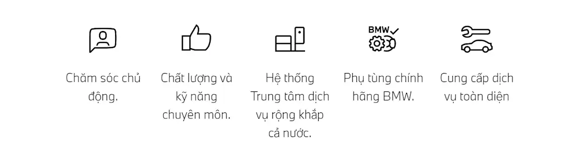

#WhateverHappens. Quý khách và xe BMW của Quý khách luôn được chăm sóc chu đáo tại Trung tâm Dịch vụ ủy quyền BMW. Và lời cam kết về sự Chăm sóc chủ động Proactive care của chúng tôi đảm bảo sẽ hỗ trợ Quý khách mọi lúc mọi nơi. Vì vậy, Quý khách hãy thư giãn và tận hưởng dịch vụ Bảo dưỡng trọn gói BMW Service Inclusive được thiết kế riêng phù hợp cho từng Quý khách. Hoặc hưởng mức giá hấp dẫn khi thay thế phụ tùng trọn gói với chương trình BMW Value Service cùng các chương trình ưu đãi khác. Dịch vụ BMW đáp ứng mọi nhu cầu của Quý khách, cho tất cả mẫu xe BMW và cho những chặng đường an tâm phía trước.
LỢI ÍCH TRONG TẦM TAY.
CHÚNG TÔI CAM KẾT CHẤT LƯỢNG DỊCH VỤ XỨNG TẦM
Chúng tôi chủ động giải quyết các vấn đề cho Quý khách trước khi có bất kỳ điều gì xảy ra cho xe và Quý khách. Dịch vụ BMW với các tính năng Chăm sóc chủ động sẽ phát hiện sớm các nhu cầu từ việc bảo dưỡng đến các vấn đề kỹ thuật trên xe. Quý khách sẽ nhận được sự hỗ trợ chuyên nghiệp từ các chuyên gia của chúng tôi và phù hợp với nhu cầu cá nhân của Quý khách. Chúng tôi đảm bảo rằng Quý khách luôn an toàn khi di chuyển trên đường.
Khám phá ngayCHẤT LƯỢNG XỨNG TẦM VÀ DUY TRÌ GIÁ TRỊ CHO XE CỦA QUÝ KHÁCH.
DỊCH VỤ BẢO DƯỠNG TRỌN GÓI BMW SERVICE INCLUSIVE
Chỉ cần thanh toán một lần, an tâm lái xe trọn hành trình. Với Dịch vụ Bảo dưỡng trọn gói BMW Service Inclusive (BSI), quý khách có thể tùy chọn thời gian hoặc số dặm phù hợp, và chỉ cần trả một khoản chi phí cố định ban đầu, quý khách sẽ được hưởng tất cả các dịch vụ có trong gói. Xe BMW của quý khách sẽ luôn trong trạng thái vận hành tốt nhất. Gói dịch vụ được áp dụng tại tất cả các Trung tâm dịch vụ ủy quyền chính hãng BMW trên toàn thế giới
Khám phá ngayLỰA CHỌN DỊCH VỤ PHÙ HỢP CHO MỖI TÌNH HUỐNG
Sửa chữa đồng sơn, thay thế lốp xe hay hỗ trợ sự cố trên đường – Chúng tôi luôn đặt an toàn của quý khách lên hàng đầu.
Hỗ trợ sự cố trên đường BMW Roadside Assistance.
Tại BMW, dịch vụ hỗ trợ sự cố trên đường luôn sẵn sàng phục vụ quý khách 24/7 xuyên suốt năm. Quý khách có thể liện hệ qua điện thoại, ứng dụng My BMW hoặc đến trực tiếp Trung tâm dịch vụ chính hãng BMW.
Khám phá ngayHỗ trợ sự cố trên đường BMW Roadside Assistance.
Tại Trung tâm dịch vụ đồng sơn chính hãng BMW, các chuyên gia kỹ thuật sẽ khắc phục tất cả hư hỏng trên bề mặt xe sau sự cố. Dịch vụ sửa chữa được thiết kế riêng theo từng trường hợp và cho từng dòng xe BMW.
Khám phá ngayDịch vụ thay thế mâm và lốp xe chính hãng BMW
Từ việc cân chỉnh góc đặt bánh xe đến việc kiểm tra áp suất lốp, các chuyên gia kỹ thuật BMW sẽ kiểm tra tỉ mỉ mâm và lốp xe hoặc thay thế khi cần thiết. Dịch vụ đẳng cấp và xứng đáng với chi phí.
Khám phá ngayKẾT NỐI TRỰC TIẾP VỚI XE BMW CỦA QUÝ KHÁCH.
Ứng dụng My BMW sẽ kết nối quý khách với xe BMW, cập nhật và thông báo kịp thời tình trạng xe của quý khách. Chúng tôi sẽ thông báo khi xe quý khách cần thực hiện dịch vụ bảo dưỡng, khắc phục lỗi kỹ thuật hoặc thực hiện các dịch vụ khác.
LỢI ÍCH DÀNH CHO QUÝ KHÁCH
-
Đặt hẹn dịch vụ trực tuyến linh hoạt
-
Nhận thông báo về các dịch vụ bảo dưỡng và sửa chữa cần thiết
-
Cập nhật liên tục về tình trạng xe, vị trí xe và đảm bảo cung cấp kịp thời Dịch vụ hỗ trợ sự cố trên đường
-
An tâm kiểm soát và điều khiển xe trước mọi tình huống, bất kể quý khách đang ở đâu
-
Cập nhật thường xuyên các tin tức về BMW.
KẾT NỐI VỚI ỨNG DỤNG MY BMW VỚI 3 BƯỚC ĐƠN GIẢN.
-
Tải miễn phí ứng dụng My BMW từ Apple Store hoặc Google Play Store
-
Đăng nhập bằng BMW ID và tiến hành tạo tài khoản
-
Nhập số VIN và kết nối xe với ứng dụng My BMW
NHỮNG CÂU HỎI THƯỜNG GẶP
Dịch vụ BMW là gì?
Tại trung tâm dịch vụ chính hãng BMW, quý khách và xe BMW sẽ nhận được dịch vụ tốt nhất. BMW cung cấp các gói dịch vụ sửa chữa dài hạn như Dịch vụ bảo dưỡng trọn gói BSI, Dịch vụ BMW Value Service với giá phụ tùng ưu đãi, các Dịch vụ chăm sóc và Dịch vụ đồng sơn. Quý khách có thể an tâm khi các dịch vụ đều được thiết kế dành riêng cho xe BMW của quý khách. Chúng tôi luôn mang đến những giải pháp lý tưởng. dành riêng cho từng mẫu xe BMW, cho từng nhu cầu của quý khách và cho các hành trình thú vị phía trước.
Khi nào tôi cần đặt lịch hẹn trực tuyến và khoảng thời gian bảo dưỡng khuyến nghị dành cho xe là bao lâu?
Chúng tôi luôn thông báo kịp thời đến quý khách thời điểm cần thực hiện dịch vụ bảo dưỡng kế tiếp. Từ 1982, BMW đã thay thế hình thức bảo dưỡng dựa vào khoảng thời gian bằng bảo dưỡng theo tình trạng thực tế của xe. Các cảm biến và thuật toán đặc biệt sẽ theo dõi điều kiện vận hành xe BMW của quý khách. Hệ thống nhắc bảo dưỡng (CBS) xác định các yêu cầu bảo dưỡng cần thiết cho xe. Hệ thống sẽ cung cấp cho quý khách thông tin về việc điều chỉnh phạm vi dịch vụ phù hợp với yều cầu riêng của quý khách.
Bảng điều khiển sẽ thể hiện số dặm và thời gian còn lại trước khi xe cần thực hiện bảo dưỡng, cũng như bất kỳ yêu cầu kiểm tra khác.
-
Dầu động cơ
-
Má phanh: trước và sau riêng biệt
-
Dầu phanh
-
Kiểm tra xe
-
Kiểm tra theo luật, tùy thuộc vào quy định của địa phương
-
Bộ lọc dầu
Hệ thống nhắc bảo dưỡng thông minh (CBS) là một phần trong Proactive Care. Vì thế, CBS là yếu tố then chốt trong việc cam kết chất lượng dịch vụ của chúng tôi.
Làm thế nào để biết xe BMW của tôi cần thực hiện dịch vụ gì?
Quý khách có thể tham khảo các Dịch vụ cần thiết bao gồm kiểm tra và thay dầu động cơ, má phanh, và nhiều dịch vụ khác – trên bảng điều khiển hoặc tại ứng dụng My BMW. Xe của quý khách cũng liên tục lưu giữ thông tin về các yêu cầu dịch vụ tại thiết bị điều khiển từ xa hoặc chìa khóa xe khi xe di chuyển. Khi quý khách đến Trung tâm dịch vụ chính hãng BMW, các chuyên gia kỹ thuật sẽ nhận dữ liệu từ thiết bị điều khiển từ xa và đưa ra các hạng mục dịch vụ cần thiết nhất.
Tôi có thể tìm Trung tâm dịch vụ chính hãng BMW gần nhất như thế nào?
Tìm Trung tâm dịch vụ chính hãng BMW gần nhất:
Tìm Trung tâm dịch vụ chính hãng BMW gần nhấtĐặt hẹn trực tuyến tại đây:
Đặt hẹn trực tuyến tại đâyChi phí kiểm tra xe tại Trung tâm dịch vụ chính hãng BMW là bao nhiêu?
Chi phí kiểm tra xe phụ thuộc vào điều kiện vận hành thực tế xe của quý khách. Đặt hẹn dịch vụ ngay tại Trung tâm dịch vụ chính hãng BMW và nhân báo giá chi tiết.
Tôi có thể tìm thấy số VIN ở đâu?
Số VIN là số nhận dạng xe BMW của quý khách. Quý khách có thể kiểm tra số VIN tại điểm E, phần 1 của Giấy chứng nhận đăng ký xe. Phần 1 của Giấy chứng nhận đăng ký xe được phát hành từ năm 2005. Quý khách cũng có thể kiểm tra tại điểm 4 của Giấy chứng nhận đăng ký xe được phát hành trước năm 2005.